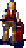
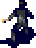
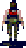
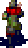
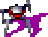

LIVE PODS — kubectl get pods -w
idle
NAME
STATUS
NODE
Cluster:
kind-openzerg
· Namespace:
default
Total:
0
· Running:
0
· Completed:
0
ATTACK LOGS — stdout
0 events
MODE:
booting…
LIVE
REPLAY
AUTO
▶ PLAY REPLAY
⟲ RESET
LAUNCH:





⚡ SWARM x20
SKIN:
RA2
TACTICAL
AUDIO:
MUSIC
SFX
📸 SCREENSHOT